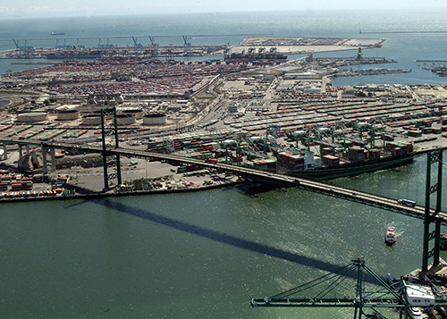

The MEAEWG was established to provide a forum to exchange information and offer opportunities for inter-agency collaboration for Federal agencies with an interest in the maritime use of alternative fuels, technologies to reduce air emissions, and energy efficiency.
Value
The economic health of both the MTS and the Nation's ocean, coastal, and freshwater ecosystems must co-exist in a way that supports transportation while protecting and sustaining human life and the environment generally. Emissions from vessels, port equipment, trucks, and locomotives have emerged as a significant concern in many port communities. Efforts by the Maritime Energy and Air Emissions Working Group (MEAEWG) support collaboration among Federal partners to identify and assess alternative fuel and energy technologies, energy efficiency measures, and emissions reduction technologies for MTS operations and to collect and use associated data to guide policy decision making.
Working Group Leads
Department of Energy
Maritime Administration

Participating Agencies
Bureau of Ocean Energy Management
Department of State
Environmental Protection Agency
Marine Mammal Commissions
National Oceanographic and Atmospheric Administration
U.S. Navy
U.S. Army Corps of Engineers
U.S. Coast Guard
U.S. Department of Agriculture
Activity and Milestones
September 2016: The MEAEWG member agencies finalized the Action Plan on September 9, 2016.
June 2016: The CMTS Coordinating Board approved the Action Plan framework on June 8, 2016, and directed the Working Group to finalize specific tasks under the framework.
May 2016: MEAEWG member agencies developed an Action Plan framework.
December 2015: At the request of members of the Maritime Energy Task Team (METT) at the CMTS Coordinating Board December 10, 2015, meeting, the Coordinating Board unanimously approved to enhance the METT to a more formal working group to incorporate technologies and actions related to addressing air emissions from maritime sources.
December 2013: The Maritime Energy Task Team was established on December 12, 2013, to provide a forum to exchange information and offer opportunities for interagency collaboration to examine a number of promising alternative ship fuels, measures, and technologies to address the challenges of retrofitting and the availability of fuel infrastructure.
Resources
These documents describe many of the alternative fuels and liquefied natural gas activities carried out jointly or individually by CMTS member (and other) agencies. The compendium and matrix are intended to be a useful guide to identify maritime energy activities of member agencies and areas for potential interagency collaboration.